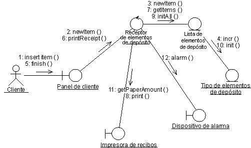

| Directriz: Diagrama de comunicación |
 |
|
| Elementos relacionados |
|---|
Introducción
Los diagramas de comunicación se utilizan para mostrar cómo interactúan los objetos para efectuar el comportamiento de un guión de uso concreto, o una parte de un guión de uso. Junto con los diagramas de secuencia, los diseñadores utilizan los diagramas de comunicación para definir y aclarar los roles de los objetos que efectúan un flujo de sucesos concreto de un guión de uso. Son el origen principal de información que se utiliza para determinar las responsabilidades y las interfaces de clases. A diferencia del diagrama de secuencia, un diagrama de comunicación muestra las relaciones entre los objetos. Los diagramas de secuencia y los diagramas de comunicación expresan una información similar, pero de modos diferentes. Los diagramas de comunicación muestran las relaciones entre objetos y son mejores para comprender todos los efectos en un objeto determinado para el diseño de procedimiento. Debido al formato del diagrama de comunicación, tienden a ser más adecuados para las tareas de análisis (consulte Tareas: Análisis de guión de uso). Específicamente, tienden a ser más adecuados para describir interacciones más sencillas de números más pequeños de objetos. Como el número de objetos y de mensajes crece, el diagrama es cada vez más difícil de leer. Además, es difícil mostrar información descriptiva adicional como tiempo, puntos de decisión u otra información no estructurada que se pueda añadir fácilmente a las notas en un diagrama de secuencia. Contenidos de los diagramas de comunicaciónPuede tener objetos e instancias de actor en diagramas de comunicación, junto con enlaces y mensajes que describen cómo están relacionados y cómo interactúan. El diagrama describe lo que ocurre en los objetos participantes, respecto a cómo se comunican los objetos enviando mensajes entre si. Puede realizar un diagrama de comunicación para cada variante del flujo de sucesos del guión de uso.  Un diagrama de comunicación que describe parte del flujo de sucesos del guión de uso Recibir elemento de depósito en el Sistema de máquina de reciclaje. ObjetosUn objeto se representa con un símbolo de objeto que muestra el nombre del objeto y su clase subrayada, separados por dos puntos: objectname : classname Puede utilizar objetos en diagramas de comunicación de los modos siguientes:
ActoresNormalmente, una instancia de actor se produce en el diagrama de comunicación, como la parte que invoca la interacción. Si dispone de varias instancias de actor en el mismo diagrama, intente mantenerlas en la periferia del diagrama. EnlacesLos enlaces se definen del modo siguiente:
MensajesUn mensaje es una comunicación entre objetos que transfiere información con la expectativa de que esa actividad se llevará a cabo. En diagramas de comunicación, un mensaje se muestra como una flecha etiquetada junto a un enlace. Esto significa que el enlace se utiliza para transportar, o para implementar la entrega del mensaje al objeto de destino. La flecha dirige a lo largo del enlace en la dirección del objeto de destino (el que recibe el mensaje). La flecha está etiquetada con el nombre del mensaje, y sus parámetros. La flecha también puede estar etiquetada con un número de secuencia para mostrar la secuencia del mensaje en la interacción global. Los números de secuencia suelen utilizarse en los diagrama de comunicación, porque son el único modo de describir la secuenciación relativa de los mensajes. Un mensaje puede estar sin asignar, lo que significa que su nombre es una cadena temporal que describe el significado general del mensaje. Posteriormente, podrá asignar el mensaje especificando la operación del objeto de destino del mensaje. La operación especificada reemplazará entonces el nombre del mensaje. |
© Copyright IBM Corp. 1987, 2006. Reservados todos los derechos. |